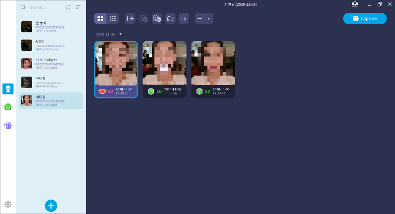
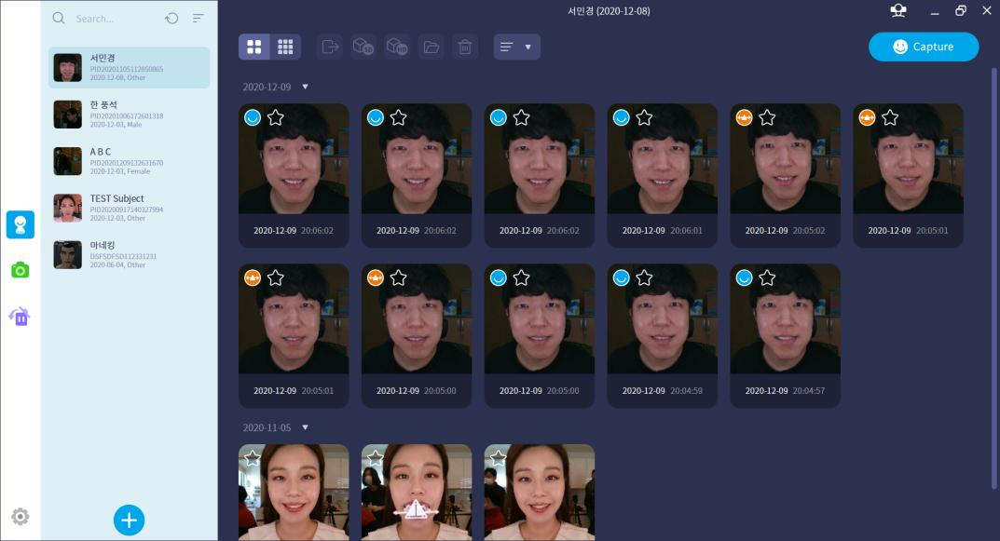
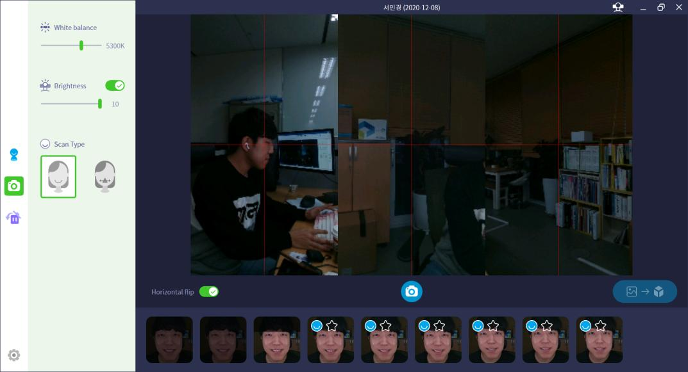
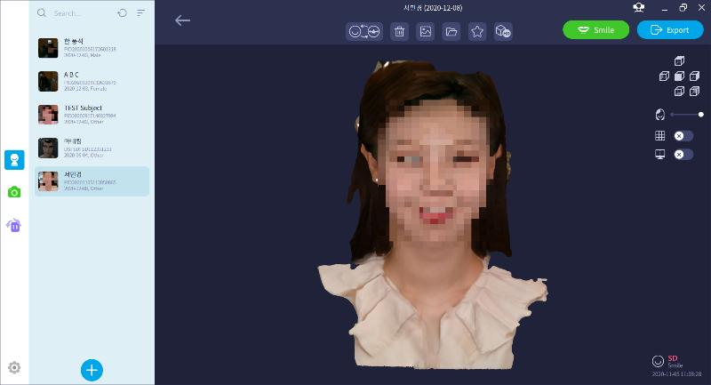
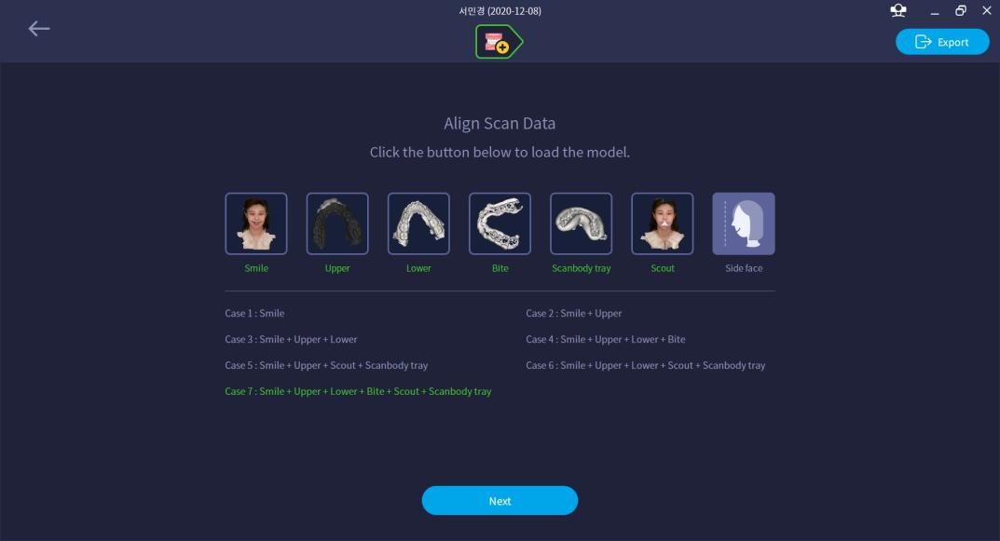
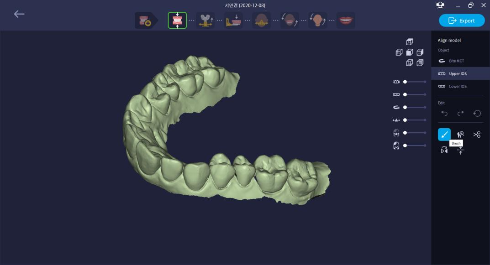
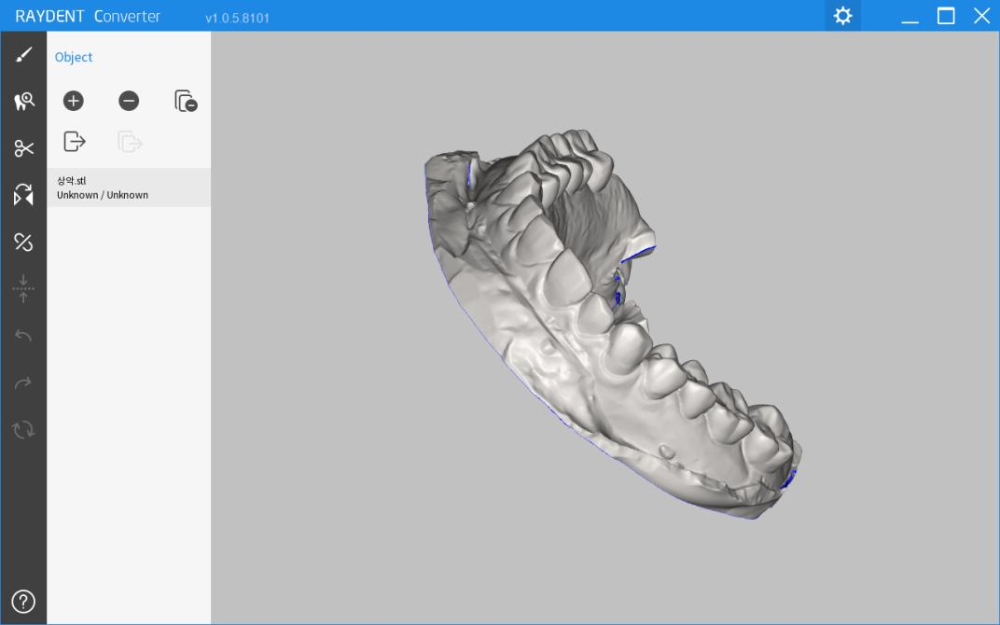
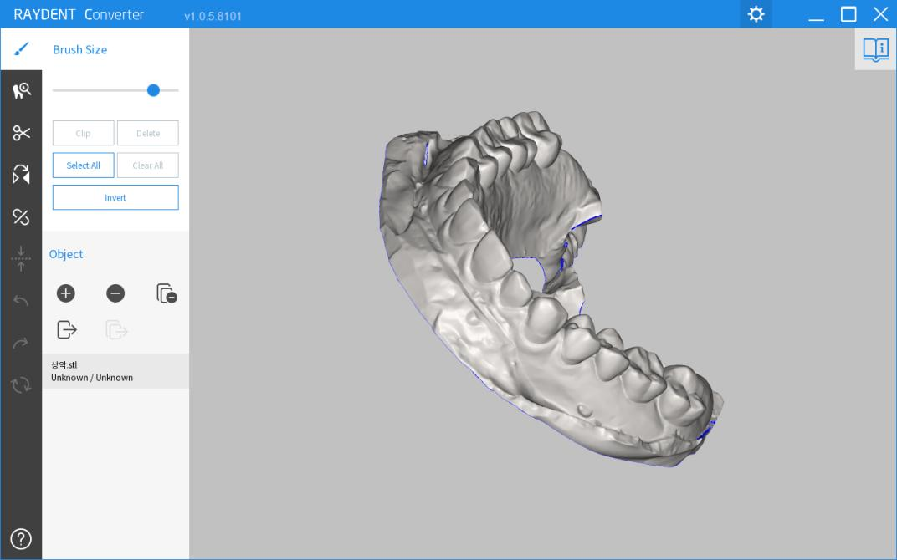
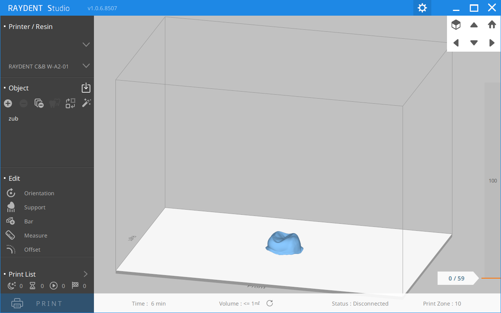
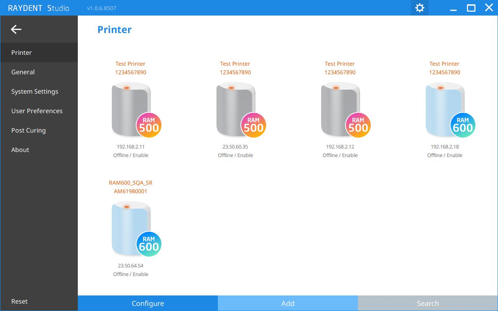

C++과 Qt 프레임워크를 기반으로 데스크톱 애플리케이션을 설계하고 개발하는 소프트웨어 엔지니어입니다.
레이(RAY)에서 9년간 치과 의료기기용 3D 소프트웨어를 개발하며, UI 개발, 멀티소켓 통신 구조, 우선순위 스레드 풀, 분산 데이터 동기화 시스템 등 복잡한 시스템을 구현했습니다.
현재 엑스캐스(XCATH)에서 DevOps 환경 구축과 AI 시스템을 개발하며, RAG 챗봇과 AI 코드 리뷰 자동화 등 AI를 실무에 도입하여 개발 생산성을 높이고 있습니다.
QML, MFC, CEGUI 기반 전체 UI 설계 및 개발
멀티소켓 통신, 우선순위 스레드 풀, 분산 동기화
RAG 챗봇 (검색 정확도 94%), AI 코드 리뷰 시스템
CI/CD 파이프라인, MinIO 빌드 캐시, Git 브랜치 전략
C++/Qt 기반 데스크톱 애플리케이션 개발. QML/MFC/CEGUI 등 다양한 UI 프레임워크 경험
멀티소켓 통신 구조, 우선순위 스레드 풀, 시리얼/TCP 통신 처리 등 시스템 레벨 개발
CouchDB + Syncthing 조합의 서버리스 데이터 공유 시스템 및 백그라운드 동기화 서비스 개발
사내 RAG 챗봇, AI 코드 리뷰 자동화 등 AI 도입 경험. GitLab CI/CD 파이프라인 구축
사내 문서를 Vector DB에 구축한 RAG 기반 챗봇.
GitLab Webhook을 활용한 자동 AI 리뷰 시스템를 구현. 도메인별 전문가 페르소나로 다각적 코드 리뷰 자동화.
Git 브랜치 전략 수립 및 CI/CD 파이프라인 구축.
치과용 3D FaceScan 소프트웨어. 환자 정보 관리, 3D 촬영 데이터 관리 및 치아 정렬 기능 등 기능 제공.






RAYFace 백그라운드 데이터 관리 서비스. 앱이 실행 중이지 않아도 데이터 동기화 상태를 관리하고, 외부 애플리케이션에 REST API를 제공합니다.
C++20 기반 우선순위 스레드 풀 라이브러리. 개발자가 스레드 생성/관리 부담 없이 비동기 프로그래밍을 할 수 있도록 설계했습니다.
치과용 DICOM 의료 이미지 데이터를 STL 3D 모델로 변환하는 소프트웨어. 브러시 편집, 클리핑, 오브젝트 관리 기능을 제공.


치과용 3D 프린터 제어 소프트웨어. 3D 오브젝트 로딩, 편집(Orientation, Support, Bar, Measure, Offset) 및 출력 정보 프린터 전달 기능을 수행.


적외선 카메라가 연결된 라즈베리 파이를 활용한 주차 관제 시스템. 물체가 일정 거리 내로 접근 시 사진을 촬영하고 서버로 전송합니다.
뇌혈관 시술용 가이드와이어 및 원격 중재시술 로봇 개발 기업. GitLab CI/CD 환경 구축, AI 코드 리뷰 자동화, RAG 챗봇 개발 등 인프라 및 AI 환경 구축 업무 수행.
코스닥 상장 치과 의료기기 기업. RAYFace, RAYDent Studio, RAYDent Converter 등 3D 의료 소프트웨어 개발. UI 개발, 멀티소켓 통신, 분산 데이터 동기화 시스템 구축.